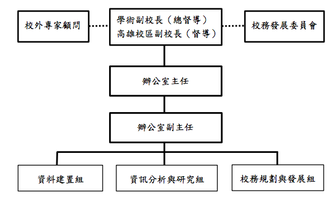

校務研究辦公室
組織架構
Office of Institutional Research，簡稱IR Office，是為了建構以實證資訊為基礎之富科學化的校務決策文化，以落實學生學習成效本位之績效評估，並進以強化本校教學卓越特色及確保校務之永續發展、持續創新發展與自我提升超越。
• 介紹
在學校組織定位上，是屬於一級單位，由學術副校長擔任總督導。因校區特性，台北校區設置辦公室主任一人，而副主任一職由高雄校區副教務長擔任，以利兩校區之溝通協調與整合。依校務研究內涵分為 資料建置、資料分析與研究、校務規劃與發展三個組別，分別由專長相符教師兼任。
• 組織架構
